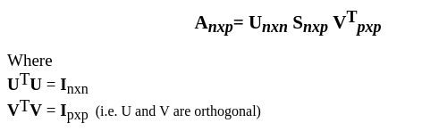

Singular Value Decomposition¶
Singular value decomposition takes a rectangular matrix of gene expression data (defined as A, where A is a n x p matrix) in which the n rows represents the genes, and the p columns represents the experimental conditions. The SVD theorem states:

Where the columns of U are the left singular vectors (gene coefficient vectors); S (the same dimensions as A) has singular values and is diagonal (mode amplitudes); and V^T has rows that are the right singular vectors (expression level vectors). The SVD represents an expansion of the original data in a coordinate system where the covariance matrix is diagonal.
[1]:
import numpy as np
from scipy.linalg import svd,eig
finding SVD values with easy way and assemble¶
[2]:
arr = np.array([
[1,2,6,8],
[3,4,7,9]
])
U,S,VT = svd(arr)
[3]:
print(arr)
[[1 2 6 8]
[3 4 7 9]]
[4]:
print(U)
[[-0.63398891 -0.77334214]
[-0.77334214 0.63398891]]
[5]:
print(S)
[16.04604275 1.58887135]
[6]:
print(VT)
[[-0.18409619 -0.27180199 -0.57443001 -0.74984161]
[ 0.710331 0.6226252 -0.12721641 -0.30262801]
[-0.42976161 0.36898254 0.64033436 -0.5187762 ]
[-0.52615912 0.63428182 -0.49377936 0.27753396]]
[7]:
print(U.shape,S.shape,VT.shape)
(2, 2) (2,) (4, 4)
Assemble matrix¶
[8]:
singular_value_dim = (U.shape[1],VT.shape[0])
singular_value = np.zeros(singular_value_dim)
print(singular_value)
[[0. 0. 0. 0.]
[0. 0. 0. 0.]]
[9]:
for row in range(singular_value_dim[0]):
for col in range(singular_value_dim[1]):
if row < S.shape[0]:
if row == col:
singular_value[row][col] = S[row]
[10]:
print(S)
[16.04604275 1.58887135]
[11]:
print(singular_value)
[[16.04604275 0. 0. 0. ]
[ 0. 1.58887135 0. 0. ]]
[12]:
print(U.shape,singular_value.shape,VT.shape)
(2, 2) (2, 4) (4, 4)
[13]:
U @ singular_value @ VT
[13]:
array([[1., 2., 6., 8.],
[3., 4., 7., 9.]])
Calculating with eigen values and vectors¶
for U
calculate A * AT
calculate eigen values and vectors
U = eigen vectors of A * AT
for V
calculate AT * A
calculate eigen values and vectors
V = eigen vectors of AT * A
[14]:
aaT = arr @ arr.T
aTa = arr.T @ arr
[15]:
U_values, U = eig(aaT)
eigen vector for U
[16]:
print(U)
[[-0.77334214 -0.63398891]
[ 0.63398891 -0.77334214]]
eigen value of U
[17]:
print(U_values)
[ 2.52451216+0.j 257.47548784+0.j]
[18]:
V_values, V = eig(aTa)
eigen vector of V
[19]:
print(V.T)
[[-0.18409619 -0.27180199 -0.57443001 -0.74984161]
[ 0.710331 0.6226252 -0.12721641 -0.30262801]
[ 0.64780737 -0.6562097 -0.26508738 0.28189204]
[-0.00734194 -0.10763191 0.80848791 -0.57854021]]
eigen values of V
[20]:
print(V_values)
[ 2.57475488e+02+0.j 2.52451216e+00+0.j -6.70099921e-16+0.j
8.89903972e-15+0.j]
singular value : square root of U values in descending order
[21]:
singular_val = np.sqrt(U_values.real)
np.sort(singular_val)[::-1]
[21]:
array([16.04604275, 1.58887135])
Image processing with SVD¶
[156]:
import matplotlib.pyplot as plt
[157]:
colored_arr = plt.imread("./images/rdj.jpg")
[163]:
colored_arr[:,:,0].shape
[163]:
(550, 550)
[210]:
colored_arr[...,:3].shape
[210]:
(550, 550, 3)
[185]:
plt.imshow(colored_arr[:,:,0])
[185]:
<matplotlib.image.AxesImage at 0x7f30e4c3bd90>
[187]:
plt.imshow(colored_arr[:,:,1])
[187]:
<matplotlib.image.AxesImage at 0x7f30e4578a00>
[188]:
plt.imshow(colored_arr[:,:,2])
[188]:
<matplotlib.image.AxesImage at 0x7f30e45587f0>
[217]:
u,s,vT = svd(colored_arr[:,:,0])
[221]:
plt.imshow(u)
[221]:
<matplotlib.image.AxesImage at 0x7f30e50fc310>
[223]:
plt.imshow(vT)
[223]:
<matplotlib.image.AxesImage at 0x7f30e4522040>
[224]:
plt.plot(s)
[224]:
[<matplotlib.lines.Line2D at 0x7f30e4444130>]
[225]:
sv_dim = (u.shape[1],vT.shape[0])
sv = np.zeros(sv_dim)
for row in range(sv_dim[0]):
for col in range(sv_dim[1]):
if row < s.shape[0]:
if row == col:
sv[row][col] = s[row]
plt.imshow(u @ sv @ vT)
[225]:
<matplotlib.image.AxesImage at 0x7f30e4418f10>
[ ]: